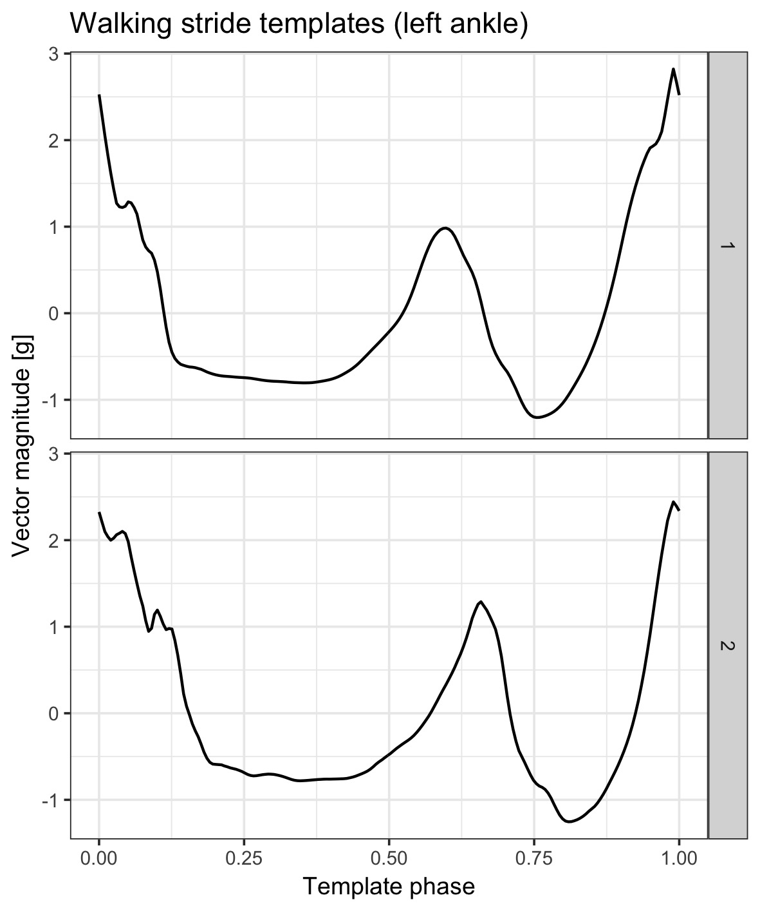

Package adeptdata was created to host raw accelerometry data sets and their derivatives. Some of them are used in the corresponding adept package.
Package CRAN index is located here. Package GitHub repo is located here.
Table of Contents
Installation
Install from CRAN.
install.packages("adeptdata")
Data objects
Outdoor continuous walking raw accelerometry data acc_walking_IU
acc_walking_IU is a sample of raw accelerometry data collected during outdoor continuous walking from 32 healthy participants between 23 and 52 years of age. Data were collected at frequency 100 Hz simultaneously with four wearable accelerometers located at left wrist, left hip and both ankles. See ?acc_walking_IU for details.
library(adeptdata)
library(dplyr)
library(ggplot2)
library(reshape2)
library(lubridate)
acc_walking_IU %>%
filter(time_s < 6, subj_id == acc_walking_IU$subj_id[1]) %>%
mutate(loc_id = factor(
loc_id,
levels = c("left_wrist", "left_hip", "left_ankle", "right_ankle"),
labels = c("Left wrist", "Left hip", "Left ankle", "Right ankle"))) %>%
melt(id.vars = c("subj_id", "loc_id", "time_s")) %>%
ggplot(aes(x = time_s, y = value, color = variable)) +
geom_line() +
facet_wrap(~ loc_id, ncol = 2) +
theme_bw(base_size = 9) +
labs(x = "Exercise time [s]",
y = "Amplitude [g]",
color = "Sensor\naxis",
title = "Raw accelerometry data of walking (100 Hz)")
Outdoor run raw accelerometry data acc_running
acc_running is a sample raw accelerometry data collected during 25 minutes of an outdoor run. Data were collected at frequency 100 Hz with two ActiGraph GT9X Link sensors located at left hip and left ankle. See ?acc_running for details.
t1 <- ymd_hms("2018-10-25 18:07:00", tz = "UTC")
t2 <- ymd_hms("2018-10-25 18:20:30", tz = "UTC")
t3 <- ymd_hms("2018-10-25 18:22:00", tz = "UTC")
acc_running %>%
filter((date_time >= t1 & date_time < t1 + as.period(4, "seconds")) |
(date_time >= t2 & date_time < t2 + as.period(4, "seconds")) |
(date_time >= t3 & date_time < t3 + as.period(4, "seconds")) ) %>%
mutate(loc_id = factor(
loc_id,
levels = c("left_hip", "left_ankle"),
labels = c("Left hip", "Left ankle"))) %>%
melt(id.vars = c("date_time", "loc_id")) %>%
mutate(date_time_floor = paste0(
"Minute start: ", floor_date(date_time, unit = "minutes"))) %>%
ggplot(aes(x = date_time, y = value, color = variable)) +
geom_line(size = 0.5) +
facet_grid(loc_id ~ date_time_floor, scales = "free_x") +
theme_bw(base_size = 9) +
labs(x = "Time [s]",
y = "Acceleration [g]",
color = "Sensor\naxis",
title = "Raw accelerometry data (100 Hz)")
Walking stride accelerometry data templates stride_template
stride_template is a list containing walking stride pattern templates derived from accelerometry data collected at four body locations: left wrist, left hip, left ankle, and right ankle. See ?stride_template for details.
data.frame(
x = rep(seq(0, 1, length.out = 200), 2),
y = c(stride_template$left_ankle[[2]][1, ],
stride_template$left_ankle[[2]][2, ]),
group = c(rep(1, 200), rep(2, 200))) %>%
ggplot(aes(x = x, y = y, group = group)) +
geom_line() +
facet_grid(group ~ .) +
theme_bw(base_size = 9) +
labs(x = "Time [s]",
y = "Vector magnitude [g]",
title = "Walking stride templates (left ankle)")
